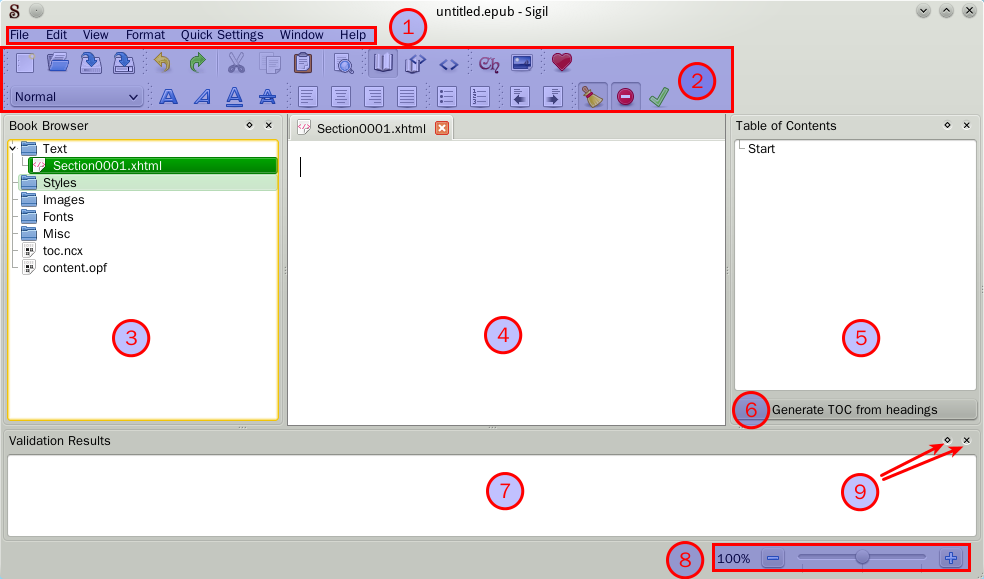
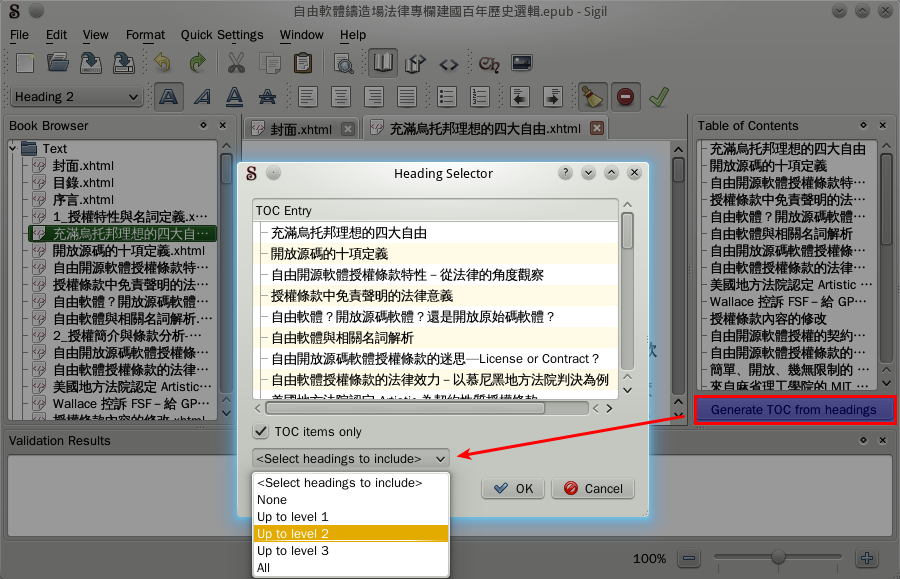
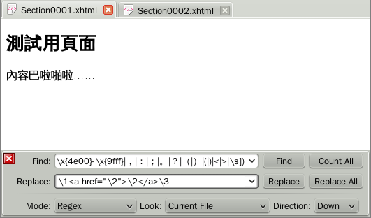
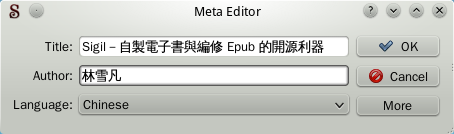
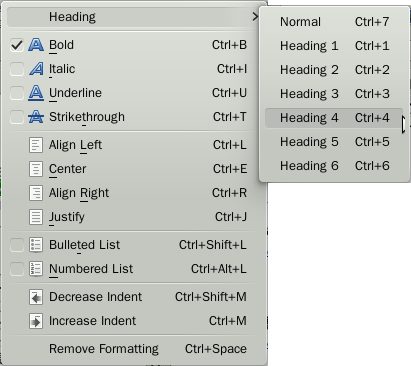
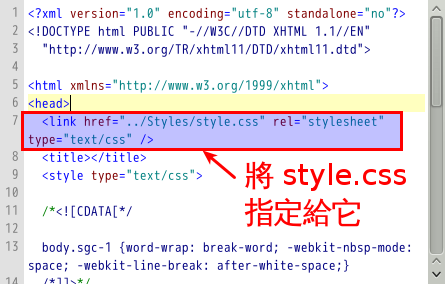

感謝您對「自由軟體鑄造場」的支持與愛護，十多年來「自由軟體鑄造場」受中央研究院支持，並在資訊科學研究所以及資訊科技創新研究中心執行，現已完成階段性的任務。 原網站預計持續維運至 2021年底，網站內容基本上不會再更動。本網站由 Denny Huang 備份封存。
也紀念我們永遠的朋友 李士傑先生（Shih-Chieh Ilya Li）。
也紀念我們永遠的朋友 李士傑先生（Shih-Chieh Ilya Li）。
Sigil－自製電子書的開源利器
建立日期 2012-06-25 14:06 最近更新在 2012-08-16 12:03
簡介
Sigil 是一款開源的 epub 電子書編輯軟體。它以所見即所得介面為主體，提供了能夠產生常見格式的按鈕，而對於某些特別的需求，也具有原始碼編輯能力。另外還有自動產生目錄、檔案整體正確性驗證、自動修正原始碼錯誤、meta data 編輯、拼寫檢查、調整頁面樣式表等特色，功能相當完全。可以在 Windows、Mac 和 linux 平台下運行，是一個跨平台、全方位的電子書編輯製作軟體。安裝指引
- 如果您是 Linux 使用者，您可以參照本頁 (https://code.google.com/p/sigil/wiki/LinuxDistroPackages) ，看 Sigil 有沒有針對您所使用的發行版進行打包。
- 如果您是 Mac 或 Windows 使用者，您可以直接到官網下載頁 (https://code.google.com/p/sigil/downloads/list) 下載最新版本。
介面與操作
打開 Sigil 後，首先出現在眼前的就是這樣一個畫面。
▲ 圖1：Sigil 剛啟動時的畫面
- 選單列
- 按鈕列。提供各種常用功能。使用者可以任意拖動按鈕以變更位置，也可以透過【View】→【Toolbars】來將不需要的按鈕關掉，空出空間。
- Book Browser。epub 的本質是一種被律定好格式的壓縮檔，而透過這個資料夾，您可以看到當前壓縮檔內的實際結構（雖然嚴格說來有被精減過）。
- 編輯區。您可以在這裡編輯 Book Browser 中選擇的文字檔。
- 目錄。顯示電子書中的目錄結構。
- 目錄產生按鈕。可透過這個按鈕重新產生目錄。
- 檢查訊息。Sigil 可以幫您檢查您製作的電子書是否有問題。當您要求檢查時，檢查訊息就會出現在這裡。
- 編輯區內容縮放控制。
- 您可以透過這兩個按鈕，將面板關掉或拆分成獨立的視窗。
以下我們分別介紹！
Book Browser
如前所述，Book Browser 體現了 epub 的內部結構；為了讓後續的介紹更容易，姑且讓我們先看看這邊。
▲ 圖2：Book Browser 視窗
Book Browser 中顯示了 epub 中有幾個資料夾，其中：
- Text 資料夾：xhtml 或 html 格式的文字檔案一律會放在這裡。一本書可以有許多文字檔。當檔案不只一個時，這裡的順序也代表著閱讀器實際顯示的順序。
- Styles 資料夾：可以放置 CSS 樣式表檔案，供文字檔引用。
- Images 資料夾：圖檔會放在這邊，供文字檔引用。
- Fonts 資料夾：字型放在這邊，供文字檔引用。
- Misc 資料夾：收藏其他由您加入，但 Sigil 不知道該如何歸類的附加檔案。
- toc.ncx 與 content.opf：這兩個檔案 Sigil 會在內部自動維護。除非您是 epub 專家，否則請當它們不存在就好。
理論上，您可以用拖曳的方式改變檔案的順序（即章節的順序）然而在 0.5.3 版的 Sigil 中，變更檔案排序常常導致當機。建議一開始就預留下封面，以儘量避免重新排序的問題。
您可以在 Book Browser 內的項目上按右鍵，就可以召喚選單。

▲ 圖3：Book Browser 右鍵選單
在不同項目上按右鍵，跳出的選單內容也會略有不同。這邊以在文字檔上按右鍵為例子。
您可以選擇【Add Existing files...】插入現有的檔案。您插入的檔案將會被 Sigil 自動歸放到正確的資料夾中。【Add Blank Section】則可以讓您加入空白的 xhtml 文字檔案，這讓您可以快速地建立空白章節。
關於這部份的細部說明，請看這裡：https://web.sigil.googlecode.com/git/files/OEBPS/Text/book_browser.xhtml
書本目錄

▲ 圖4：讓 Sigil 產生目錄目錄面板中最初是空白的。如要產生目錄，您必須按目錄面板上的【Generate TOC from headings】按鈕，接著選擇要用哪些等級的標題來建立目錄，最後再按下確認按鈕，則目錄就會被產生出來。
如果您接著又更動了檔案與標題，則必須要重新進行這個動作。
File 選單

▲ 圖5：File 選單
您可以從這裡新增、儲存、讀取並驗證電子書檔案。Sigil 並沒有自訂的內部編輯格式；他讀取的是 epub，儲存時也總是將資料回存成 epub 檔案。
【Validate Epub】按鈕可以檢查當前的 epub 有沒有內含任何潛在問題。從 Meta Data 沒被正確填入、epub 內含未使用到的多餘檔案、引用了不正確的檔案等等，偵測的範圍相當廣，將 epub 正式發佈之前強烈建議用這功能檢查一下。
另外，雖然選單中有提供列印功能，不過該功能只能提供給單個 Section 檔案使用。想用 Sigil 印出整本書的話，恐怕還有些難度。
Edit 選單

▲ 圖6：Edit 選單
提供雜項編輯功能，以下分別介紹。
插入圖片
【Insert Image...】可以在游標位置插入圖片。需要注意的是：能透過【Insert Image...】插入的圖片，只限於「已經放入 epub 中的圖檔」。換句話說，必須先令該圖檔存於 Book Browser 的 Images 資料夾下，然後您才可以將它們編輯到電子書的頁面上。
您可以透過【File】→【New】→【Add Existing File(s)...】將圖檔導入 epub 之中。
分章
【Edit】→【Split Chapter】會替您的章節進行硬分章：具體說來，會將當前游標所在的行「視為本頁最後一行」，並將後面多出來的內容轉移到新檔案中，然後將此新檔案插入到當前檔案的正後方。至於【Insert Chapter Marker】則會在當前游標位置處插入一個分章符號（快捷鍵 Crtl + Shift + Enter）；一旦閱讀器遇到這個符號，就會將符號後方內容視為新的章節……這被稱為軟分章。不管軟分章或硬分章，以上兩種做法對讀者來說都完全相同。然而基於硬體限制，單一檔案內容如果過長，可能會使閱讀器出現異常，因此以硬分章切割章節通常是好主意。
【Split at Chapter Marker】可以一次性地幫您將所有軟分章轉成硬分章。
搜尋與取代
Sigil 的搜尋取代功能相當強大。支援一般模式、regex 模式、一次處理全部檔案等功能，可以幫書籍製作者減少很多工作。比方說高亮特定字串，格式化超連結，替換括號等等……值得使用者稍微研究一下。
▲ 圖7：搜尋取代介面
Meta Editor
您可以從【Edit】→【Meta Editor】召喚中繼資料編輯器。
▲ 圖8：Meta Editor
中繼資料編輯器可以讓使用者指定電子書的書名、作者名以及使用語系。如果您還需要更多欄位的話，請按【More】按鈕。
View 選單

▲ 圖9：View 選單
您可以在此調整 Sigil 的顯示方式。
【Toolbars】子選單可以將某些不常用的按鈕列關掉。
【Book View】、【Split View】與【Code View】這三項可以變更主編輯區的顯示方式。【Book View】表示正常模式；【Code View】表示原始碼模式；【Split View】代表同時使用兩種模式。您還可以前往設定視窗（於【Edit】→【Preferences】）調整 Split View 的分割方式。
最下面的【Book Browser】、【Validation Result】與【Table of Content】3 個選項，代表主畫面中那 3 個額外視窗的顯示與否。若您嫌主編輯區被旁邊的視窗擠壓得過小，您可以把這邊的勾去掉。
Format 選單
▲ 圖10：Format 選單
內建了常用格式供使用者直接調整。
別的不說，在製作電子書時，強烈建議使用 Heading 功能來標識各段落的標題（而非使用黑體與加大字）；因為只有依據 heading 標籤，Sigil 才能自動產生出電子書的目錄來。如果您不滿 Heading 的預設外觀，您應該透過層疊樣式表 (CSS) 來變更顯示方式。
Quick Setting 選單

▲ 圖11：Quick Settings 選單
這兩個選項都是用來處理 HTML 原始碼的。若您從不編輯原始碼，則您大可略過。
【Cleaning With HTML Tidy】打勾表示 Sigil 會自動正規化 HTML 原始碼。這包括自動替原始碼分行、加入縮進等等。而不打勾則不會進行正規化。
……雖然說明是這樣寫的，不過根據測試，本選項在 0.5.3 內沒有作用。無論勾不勾，Sigil 都會強制正規化原始碼。
【Check For Well-Formed Errors】打勾表示：當 Sigil 發現您輸入了不正確的 HTML 原始碼時，Sigil 跳出詢問視窗，問您要讓 Sigil 自己修正或是由您手動修正。本項如果不打勾，則 Sigil 會不經提示就自動修正原始碼－其結果有時並非是您想要的。
建一本書的基本流程
如果您想用 Sigil 建立一本全新的書，您可以參考以下的做法。- 使用【File】→【New】→【New Book】來建立一本全新的空白書。
- 接著透過【Edit】→【Meta Editor】設定作品名、作者名與語系。
- 依需要將文字剪下貼上、調整格式、增加頁面、放入插圖等等等……
- 按下【Generate TOC from heading】按鈕來產生目錄。
- 按下【Validate Epub】來確認格式正確。
- 儲存。
其他補充技巧
連結 CSS 樣式表
從 0.5.901 版開始，Sigil 可以透過右鍵選單來方便地連結頁面內容與 CSS 樣式表。不過很遺憾的，在大部份 linux 發行版的套件庫中版本號還追不上。如果您想要在 0.5.901 之前的 Sigil 中指定某頁連結到某樣式表，您必須要直接編輯內部頁面的原始碼。比方說……在原始碼編輯模式中找到 區段，並在區段中插入：
＜link href="/../Styles/style.css" rel="stylesheet" type="text/css" /＞
就可以在 Sigil 中使用檔名為 style.css 的樣式表。

▲ 圖12：將 style.css 樣式表指定給當前頁面
使用內嵌字型
您可以在 CSS 檔案中插入以下原始碼，就可以讓文字套用內嵌字型。 @font-face {
font-family: Custom; /* 這邊名字可以亂取 */
src: url("../Fonts/font.ttf");
}
body { /* 讓全頁都套用指定字型 */
font-family: Custom; /* 對應到之前的名字 */
}
參考資料
- Sigil 手冊：https://web.Sigil.googlecode.com/git/index.html
手冊是針對最新版本的 Sigil 編寫的，細節可能和您所用的版本略有不同。參考時請稍微注意。 - Sigil 基礎指引：https://code.google.com/p/Sigil/wiki/BasicTutorial
開發者對使用者的簡單建議。
專欄總覽


自由軟體鑄造場 製作 最佳瀏覽狀態：IE7或Firefox2.0以上 (建議使用Firefox) ‧ 解析度1024*768
E-Mail：contact@openfoundry.org Address：台北市南港區研究院路2段128號 中央研究院資訊科學研究所 . 隱私權條款. 使用條款
E-Mail：contact@openfoundry.org Address：台北市南港區研究院路2段128號 中央研究院資訊科學研究所 . 隱私權條款. 使用條款
評論
通用性大增呢 =)